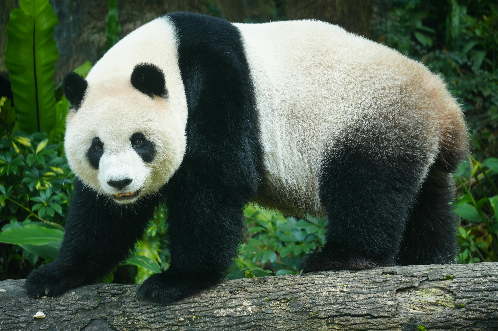

O Habitat e a Magia dos Pandas
Os ursos panda encantam por sua presença tranquila e aparência singular. Nativos das regiões montanhosas da China, eles vivem cercados por densas florestas e vales repletos de bambu, alimento essencial para sua sobrevivência.
Em meio a um ambiente que transborda biodiversidade, esses animais simbolizam a luta pela preservação da natureza. Cada passo em seu habitat revela a harmonia entre o ciclo da vida e o esforço humano para proteger a beleza natural.
Projetos de conservação e cooperação internacional têm fortalecido a população dos pandas, ressaltando a importância de cuidar do nosso planeta. As iniciativas inspiram tanto cientistas quanto amantes da natureza a repensar nosso papel no equilíbrio ecológico.
Comportamento e Dieta Exclusiva
Conhecidos por sua serenidade, os pandas adotam um modo de vida pacífico. A dieta deles, composta quase que exclusivamente de bambu, é um exemplo surpreendente de adaptação na natureza, onde a simplicidade se encontra com a sofisticação biológica.
Características Marcantes
- Pelagem icônica em preto e branco
- Comportamento solitário e introspectivo
- Símbolo global de conservação ambiental
Pesquisas apontam que a sobrevivência dos pandas depende diretamente do equilíbrio e da preservação de seus habitats naturais, beneficiando inúmeras outras espécies que coexistem nessas regiões tão especiais.
